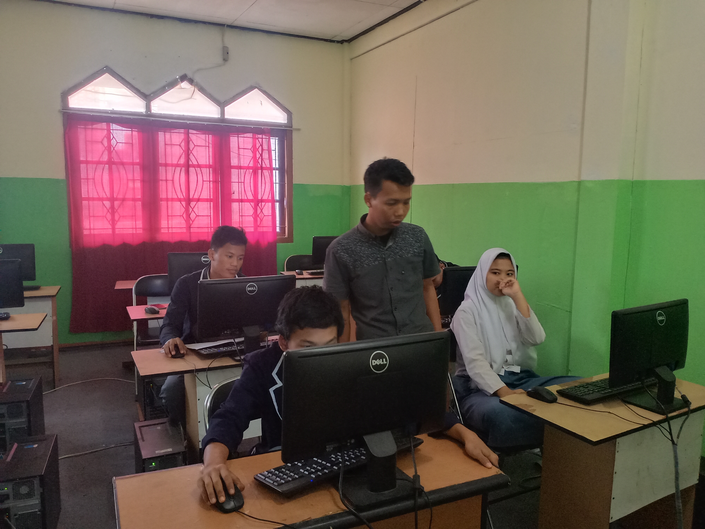

Teknik Komputer dan Jaringan
TKJ
Instalasi jaringan, keamanan siber, dan infrastruktur IT perusahaan.
- Instalasi jaringan LAN dan WAN
- Keamanan siber dasar menengah
- Server dan komputasi awan
- Penanganan gangguan jaringan
Program kejuruan TKJ, laboratorium siap pakai, dan pendampingan karier untuk lulusan yang percaya diri di dunia kerja.

Pendidikan adalah investasi terbaik untuk masa depan. Kami berkomitmen mencetak lulusan yang tidak hanya cerdas secara akademis, tetapi juga siap menghadapi tantangan dunia industri.
Selamat datang di SMK NUFA CITRA MANDIRI. Kami terus berinovasi dalam menghadirkan pendidikan kejuruan berkualitas tinggi yang relevan dengan kebutuhan industri. Dengan dukungan fasilitas modern, kurikulum terkini, dan tenaga pengajar berpengalaman, kami siap membantu siswa meraih mimpi dan menjadi pribadi yang mandiri, kompeten, dan berakhlak mulia.
Bergabunglah bersama alumni kami yang kini berkarya di berbagai bidang di seluruh Indonesia.
Baca selengkapnyaMengapa kami
Standar mutu BAN-PdP sebagai landasan pengajaran dan penilaian.
Laboratorium jaringan dan perangkat kerja yang menyerupai lingkungan industri.
Pengajar dengan jam terbang di proyek nyata, bukan sekadar teori slide.
PKL, seminar, dan rekrutmen dari mitra yang mengenal kualitas siswa kami.
Pendampingan uji kompetensi keahlian agar bukti keahlianmu dibaca perusahaan dengan jelas.
Mulai portofolio, wawancara, hingga peta lanjut studi atau kerja.
TKJ
Instalasi jaringan, keamanan siber, dan infrastruktur IT perusahaan.
Ikuti jadwal, kegiatan, dan cerita dari kelas dan lab

Pendaftaran peserta didik baru melalui sistem daring; lengkapi berkas sesuai panduan di halaman PPDB.

Penambahan unit praktik untuk mendukung simulasi jaringan dan troubleshooting berkelompok.

Tim siswa membawa pulang trofi setelah menyelesaikan studi kasus infrastruktur dalam waktu singkat.